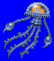
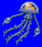
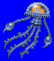
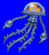

Height: 3 to 5 meters Weight: ???
Habitat: Ocean, lake, caveOrigin: ???
Meaning: ???
An enormous jellyfish. Usually it floats in the ocean or a lake, but sometimes it is shown floating in the air. In Japan there are approximately 200 kinds of jellyfish. It can inhabit any lake regardless of climate and inhabit any ocean regardless of whether it is fresh or salt water. Jellyfish can stun other creatures using their long tentacles.